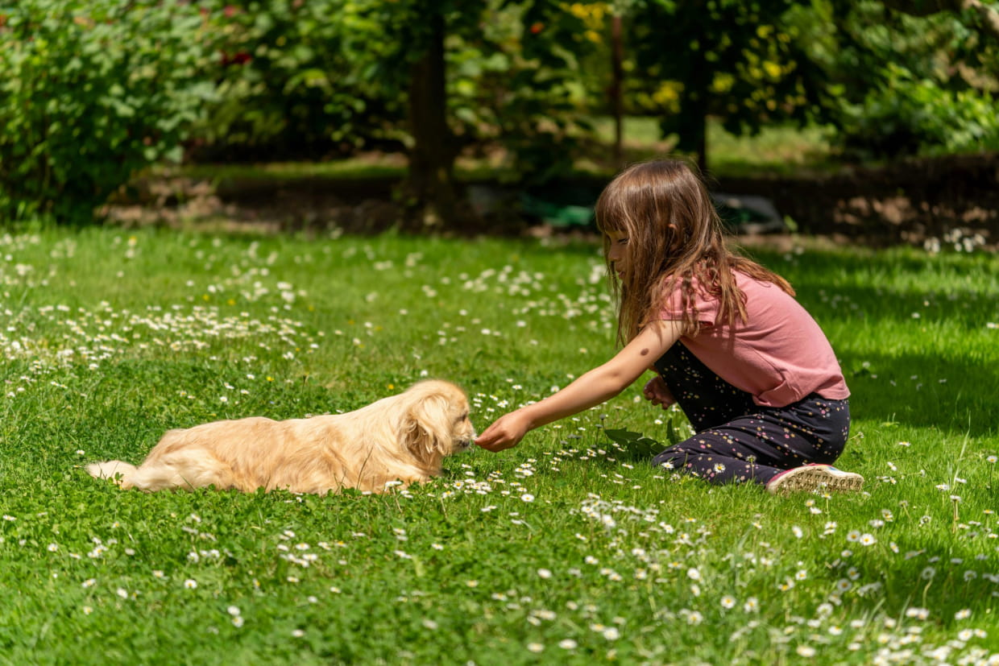

Tanti animali cercano casa: trova il tuo
Lo sapevi che il cane è considerato il migliore amico dell’uomo?
Per noi di Casa Otium tutti gli animali sono migliori amici, scegli il tuo preferito!
Scopri di più
Lo sapevi che il cane è considerato il migliore amico dell’uomo?
Per noi di Casa Otium tutti gli animali sono migliori amici, scegli il tuo preferito!
Scopri di più
Ogni animale che salviamo è una storia. Ecco i numeri che raccontano la nostra.

436
Le famiglie che oggi hanno un cane oppure un piccolo drago.

45k
Pasti magici e crocchette distribuiti nel 2025.

1600
Volontari e maghi che hanno donato il loro tempo.

11
I giorni che servono perché il tuo animale preferito diventi il tuo migliore amico.
Per adottare un animale è importante garantire un ambiente sicuro e una presenza responsabile.
Ecco i requisiti principali:
Per trovare il compagno perfetto e completare l’adozione è sufficiente seguire 5 semplici passaggi:
Esplora gli animali
Visita la pagina Animali e scegli quelli che meglio si adattano al tuo stile di vita.
Invia la richiesta di adozione
Una volta che hai scelto i tuoi animali preferiti e visualizzato i loro “Bisogni”, clicca sul pulsante “Adotta”.
Il nostro staff verrà immediatamente notificato e si metterà presto in contatto per un incontro.
Conosci l’animale
Incontra l’animale tramite appuntamento per valutarne compatibilità e bisogni.
Visita o colloquio conoscitivo
I volontari verificano l’ambiente sia adatto per l’arrivo del trovatello.
Completa l’adozione
Firma il modulo e accogli il tuo nuovo amico a casa in piena sicurezza.